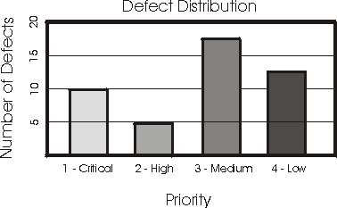
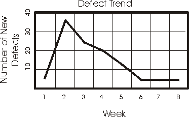
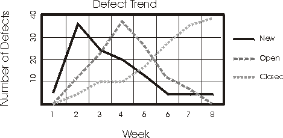
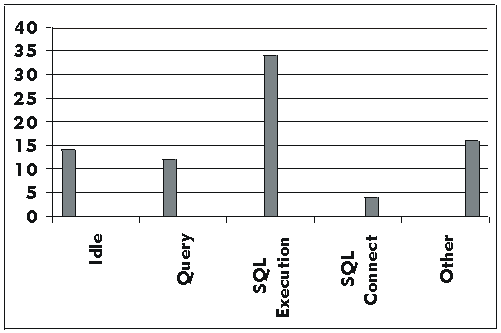
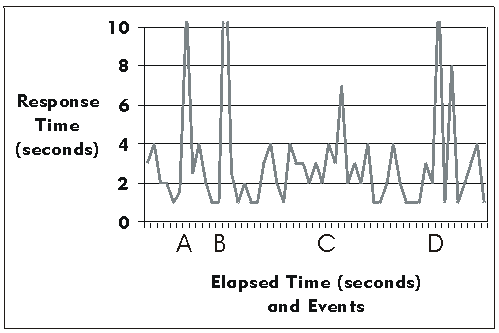
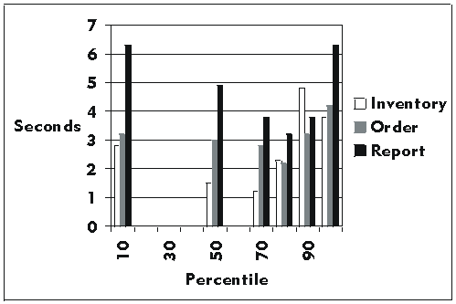

Concepts:
Key Measures of Test
The key measures of a test include coverage and quality.
Test coverage is the measurement of testing completeness, and is based on the
coverage of testing, expressed either by the coverage of test requirements and
test cases, or the coverage of executed code.
Quality is a measure is of reliability, stability, and the performance of the
target-of-test (system or application-under-test). Quality is based upon the
evaluation of test results and the analysis of change requests (defects)
identified during the testing.
Coverage metrics provides answers to the question "How complete is the
testing?" The most commonly used coverage measures are requirements-based
and code-based test coverage. In brief, test coverage is any measure of
completeness with respect to either a requirement (requirement-based) or the
code's design / implementation criterion (code-based), such as the verification
of use cases (requirement-based) or execution of all lines of code (code-based).
Any systematic testing activity is based on at least one test coverage
strategy. The coverage strategy guides the design of test cases by stating the
general purpose of the testing. The statement of coverage strategy can be as
simple as verifying all performance.
If the requirements are completely cataloged, a requirements-based coverage
strategy may be sufficient for yielding a quantifiable measure of testing
completeness. For example, if all performance test requirements have been
identified, then the test results can be referenced to get measures, such as 75
percent of the performance test requirements have been verified.
If code-based coverage is applied, test strategies are formulated in terms of
how much of the source code has been executed by tests. This type of test
coverage strategy is very important for safety-critical systems.
Both measures can be derived manually (equations given below), or may be
calculated by test automation tools.
Requirements-based test coverage is measured several times during the test
life cycle and provides the identification of the test coverage at a milestone
in the testing life cycle (such as the planned, implemented, executed, and
successful test coverage).
- Test coverage is calculated by the following equation:
Test Coverage = T(p,i,x,s) / RfT
where:
T is the number of Tests (planned, implemented, executed, or successful) as
expressed as test procedures or test cases.
RfT is the total number of Requirements for Test.
- In the Plan Test activity, the test coverage is calculated to determine
the planned test coverage and is calculated in the following manner:
Test Coverage (planned) = Tp / RfT
where:
Tp is the number of planned Tests as expressed as test
procedures or test cases.
RfT is the total number of Requirements for Test.
- In the Implement Test activity, as test procedures are being implemented
(as test scripts), test coverage is calculated using the following equation:
Test Coverage (implemented) = Ti /
RfT
where:
Ti is the number of Tests implemented as expressed by
the number of test procedures or test cases for which there are
corresponding test scripts.
RfT is the total number of Requirements for Test.
Successful Test Coverage (executed) = Ts
/ RfT
where:
Ts is the number of Tests executed as expressed as
test procedures or test cases which completed successfully and without
defects.
RfT is the total number of Requirements for Test.
Turning the above ratios into percentages allows the following statement of
requirements-based test coverage:
x% of test cases (T(p,i,x,s) in the above equations)
have been covered with a success rate of y%
This is a meaningful statement of test coverage that can be matched against a
defined success criteria. If the criteria have not been met, then the statement
provides a basis for predicting how much testing effort remains.
Code-based test coverage measures how much code has been executed during the
test, compared to how much code there is left to execute. Code coverage can
either be based on control flows (statement, branch, or paths) or data flows. In
control-flow coverage, the aim is to test lines of code, branch conditions,
paths through the code, or other elements of the software's flow of control. In
data-flow coverage, the aim is to test that data states remain valid through the
operation of the software, for example, that a data element is defined before it
is used.
Code-based test coverage is calculated by the following equation:
Test Coverage = Ie / TIic
where:
Ie is the number of items executed expressed as code
statements, code branches, code paths, data state decision points, or data
element names.
TIic is the total number of items in the code.
Turning this ratio into a percentage allows the following statement of
code-based test coverage:
x% of test cases (I in the above equation) have been covered with a success
rate of y%
This is a meaningful statement of test coverage that can be matched against a
defined success criteria. If the criteria have not been met, then the statement
provides a basis for predicting how much testing effort remains.
While the evaluation of test coverage provides the measure of testing
completion, an evaluation of defects discovered during testing provides the best
indication of software quality. Quality is the indication of how well the
software meets the requirements, so in this context, defects are identified as a
type of change request in which the target-of-test failed to meet the
requirements.
Defect evaluation may be based on methods that range from simple defect
counts to rigorous statistical modeling.
Rigorous evaluation uses assumptions about the arrival or discovery rates of
defects during the testing process. A common model assumes that the rate follows
a Poisson distribution. The actual data about defect rates are then fit to the
model. The resulting evaluation estimates the current software reliability and
predicts how the reliability will grow if testing and defect removal continue.
This evaluation is described as software-reliability growth modeling and is an
area of active study. Due to the lack of tool support for this type of
evaluation, you should carefully balance the cost of doing it with the value it
adds.
Defects analysis means to analyze the distribution of defects over the values
of one or more the parameters associated with a defect. Defect analysis provides
an indication of the reliability of the software.
For defect analysis, there are four main defect parameters commonly used:
- Status the current state of the defect (open, being fixed, closed, etc.).
- Priority the relative importance of this defect having to be addressed and
resolved.
- Severity the relative impact of this defect. The impact to the end-user,
an organization, third parties, etc.
- Source where and what is the originating fault that results in this
defect, or what component will be fixed to eliminate the defect.
Defect counts can be reported as a function of time, creating a Defect
Trend diagram or report, defect counts can be reported as a
function of one or more defect parameters, like severity or status, in a Defect
Density report. These types of analysis provide a perspective on
the trends or distribution of defects that reveal the software's reliability,
respectively.
For example, it is expected that defect discovery rates will eventually diminish
as the testing and fixing progresses. A threshold can be established below which
the software can be deployed. Defect counts can also be reported based on the
origin in the implementation model, allowing detection of "weak
modules", "hot spots", parts of the software that keep being
fixed again and again, indicating some more fundamental design flaw.
Defects included in an analysis of this kind have to be confirmed defects.
Not all reported defects report an actual flaw, as some may be enhancement
requests, out of the scope of the project, or describe an already reported
defect. However, there is value to looking at and analyzing why there are many
defects being reported that are either duplicates or not confirmed defects.
The Rational Unified Process® recommends defect evaluation based on three
categories of reports:
- Defect distribution (density) reports allow defect counts to be shown as a
function of one or two defect parameters.
- Defect age reports are a special type of defect distribution report.
Defect age reports show how long a defect has been in a particular state,
such as Open. In any age category, defects can also be sorted by another
attribute, like Owner.
- Defect trend reports show defect counts, by status (new, open, or closed),
as a function of time. The trend reports can be cumulative or
non-cumulative.
- Test results and progress reports show the results of test procedure
execution over a number of iterations and test cycles for the
application-under-test.
Many of these reports are valuable in assessing software quality. The usual
test criteria include a statement about the allowable numbers of open defects in
particular categories, such as severity class. This criterion is easily checked
with a defect distribution evaluation. By filtering or sorting on test
requirements, this evaluation can be focused on different sets of requirements.
To be effective producing reports of this kind normally requires tool
support.
Defect Status Versus Priority
Each defect should be given a priority; usually it is practical to have four
priority levels:
- Resolve immediately
- High priority
- Normal queue
- Low priority
Criteria for a successful test could be expressed in terms of how the
distribution of defects over these priority levels should look. For example, to
a successful test criteria might be no Priority 1 defects and fewer than five
Priority 2 defects are open. A defect distribution diagram, such as the
following, should be generated:

It is clear that the criterion has not been met. Note that this diagram needs
to include a filter to show only open defects as required by the test criterion.
Defect Status Versus Severity
Defect severity reports show how many defects there are of each severity
class (for example: fatal error, major function not performed, minor annoyance).
Defect Status Versus Location in the Implementation Model
Defect source reports show distribution of defects on elements in the
implementation model.
Defect age analyses provide good feedback on the effectiveness of the testing
and the defect removal activities. For example, if the majority of older,
unresolved defects are in a pending-validation state, it probably means that not
enough resources are applied to the re-testing effort.
Trend reports identify defect rates and provide a particularly good view of
the state of the testing. Defect trends follow a fairly predictable pattern in a
testing cycle. Early in the cycle, the defect rates rise quickly. Then they
reach a peak and fall at a slower rate over time.

To find problems, the project schedule can be reviewed in light of this
trend. For example, if the defect rates are still rising in the third week of a
four-week test cycle, the project is clearly not on schedule.
This simple trend analysis assumes that defects are being fixed promptly and
that the fixes are being tested in subsequent builds, so that the rate of
closing defects should follow the same profile as the rate of finding defects.
When this does not happen, it indicates a problem with the defect-resolution
process; the defect fixing resources or the resources to re-test and validate
fixes might be inadequate.

The trend reflected in this report shows that new defects are discovered and
opened quickly at the beginning of the project, and that they decrease over
time. The trend for open defects is similar to that for new defects, but lags
slightly behind. The trend for closing defects increases over time as open
defects are fixed and verified. These trends depict a successful effort.
If your trends deviate dramatically from these, they may indicate a problem and
identify when additional resources may need to be applied to specific areas of
development or testing.
When combined with the measures of test coverage, the defect analyses provide
a very good assessment on which to base the test completion criteria.
Several measures are used for assessing the performance behaviors of the
target-of-test and focus on capturing data related to behaviors such as response
time, timing profiles, execution flow, operational reliability and limits.
Primarily, these measures are assessed in the Evaluate Test activity, however,
there are performance measures that are used during the Execute Test activity to
evaluate test progress and status.
The primary performance measures include:
- Dynamic monitoring - real-time capturing and display of the status and
state of each test script being executed during the test execution.
- Response Time / Throughput -
measurement of the response times or throughput of the target-of-test for
specified actors, and / or use cases.
- Percentile Reports - percentile
measurement / calculation of the data collected values.
- Comparison Reports -
differences or trends between two (or more) sets of data representing
different test executions.
- Trace Reports - details of
the messages / conversations between the actor (test script) and the
target-of-test.
Dynamic monitoring provides real-time display / reporting, typically in the
form of a histogram or graph. The report is used to monitor or assess
performance test execution during test execution by displaying the current
state, status, and progress the test scripts being executed.

For example, in the above histogram, we have 80 test scripts
executing the same use case. In this display, 14 test scripts are in the Idle
state, 12 in the Query, 34 in SQL Execution, 4 in SQL Connect, and 16 in the
Other state. As the test progresses, we would expect to see the number of
scripts in each state change. The displayed output would be typical of a test
execution that is executing normally and is in the middle of the execution.
However, if during test execution, test scripts remain in one state or are not
showing changes, this could indicate a problem with the test execution or the
need to implement or evaluate other performance measures.
Response time / Throughput reports, as their name implies measures and
calculates the performance behaviors related to time and / or throughput (number
of transactions processed). Typically these reports are displayed as a graph
with response time (or number of transactions) on the "y" axis and
events on the "x" axis.

In addition to showing the
actual performance behaviors, it is often valuable to calculate and display
statistical information such as the mean and standard deviation of the data
values.
Percentile reports provide another statistical calculation of performance by
displaying population percentile
values for data types collected.

It is highly desirable to
compare the results of one performance test execution with that of another, to
evaluate the impact of changes made between test executions the on the
performance behaviors. Comparison reports should be used to display the
difference between two sets of data (each representing different test
executions) or trends between many executions of test.
When performance behaviors are
acceptable, or performance monitoring indicates the possible bottlenecks (such
as when test scripts remain in a given state for exceedingly long periods) trace
reporting may be the most valuable report. Trace and Profile reports display
lower level information. This information includes the messages between the
actor and the target-of-test, execution flow, data access, and the
function and system calls.
Copyright
© 1987 - 2001 Rational Software Corporation
|  Disciplines >
Disciplines >
 Test >
Test >
 Concepts >
Concepts >